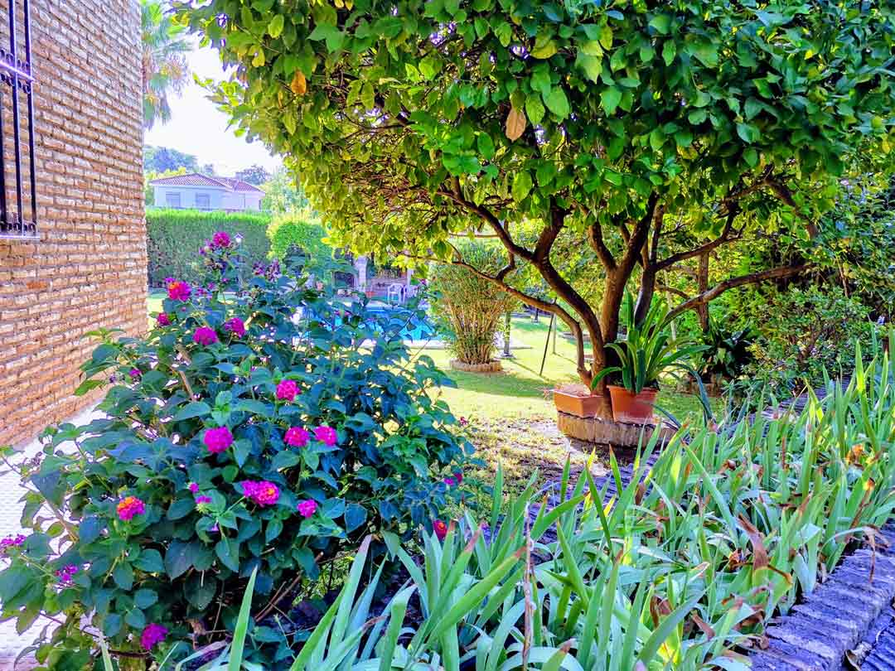
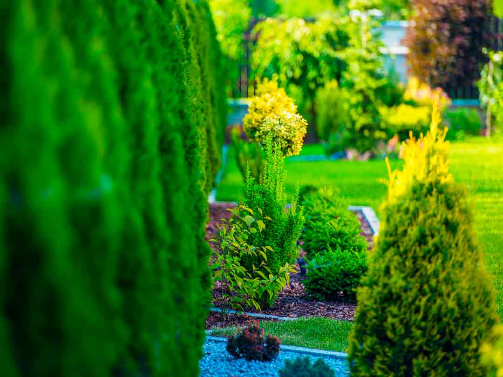
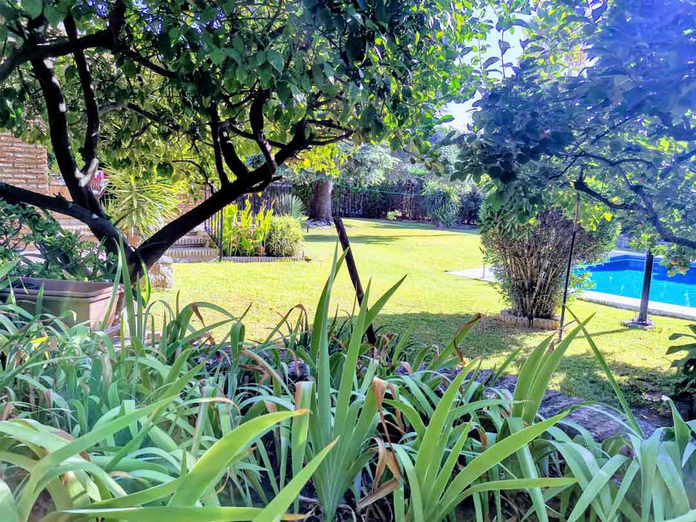

Verde360, el toque natural que tu casa pide
Con Verde360 nos dedicamos a crear y mantener espacios verdes hermosos y saludables, para que nuestros clientes puedan disfrutar de un entorno natural en su hogar o negocio.
Expertos en jardinería en Almeria
Somos una empresa de jardinería ubicada en Almería, especializada en el diseño, mantenimiento y paisajismo de jardines para hogares, empresas y espacios públicos. Contamos con un equipo de profesionales cualificados y comprometidos para hacer de tu jardín un lugar único y acogedor. ¡Déjanos embellecer tu entorno natural!
Experiencia en jardineríaGracias a mi experiencia en jardinería, he aprendido a cultivar y mantener hermosas plantas y flores que llenan mi hogar de vida y color. |
Servicio personalizado"La empresa ofrece un servicio personalizado que se adapta a l as necesidades y preferencias de cada cliente, brindando una experiencia única y satisfactoria." |
Calidad de nuestros productosNuestros productos se caracterizan por su excelente calidad, lo que nos ha permitido ganar la confianza y satisfacción de nuestros clientes. |
Jardinería en Almería
Nos dedicamos a ofrecer servicios de jardinería de alta calidad en la ciudad de Almería y sus alrededores. Contamos con un equipo de profesionales altamente capacitados que se encargarán de mantener tus espacios verdes en perfecto estado, desde el diseño y la construcción hasta el mantenimiento y la conservación.
| Mantenimiento de jardines |
| Diseño paisajístico |
Jardinería en imágenes
En nuestra galería de fotos podrás encontrar una amplia variedad de imágenes de nuestros trabajos en jardinería, desde diseño de paisajes hasta mantenimiento de jardines. ¡Descubre cómo podemos transformar tu espacio exterior en un oasis verde!
  